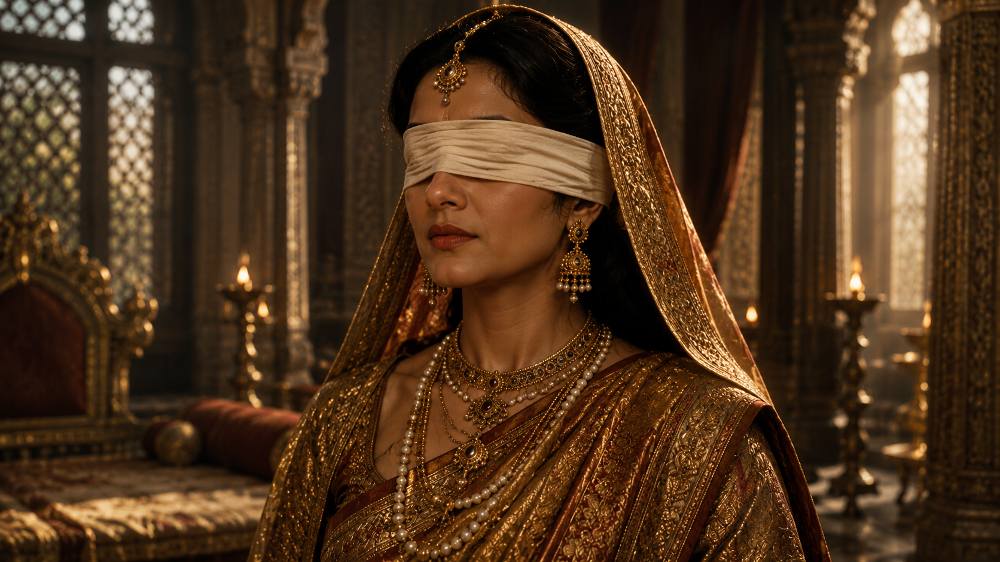
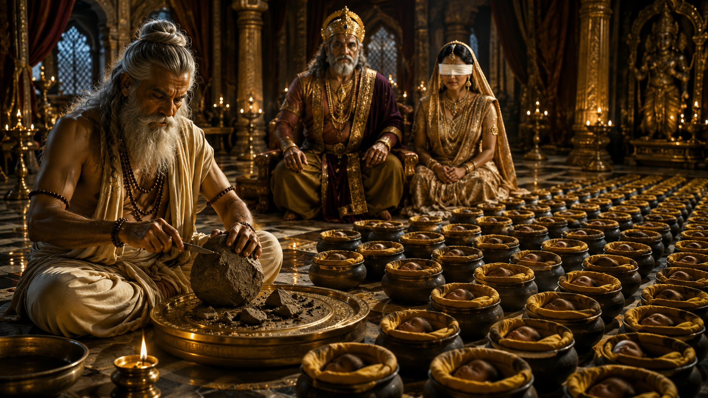
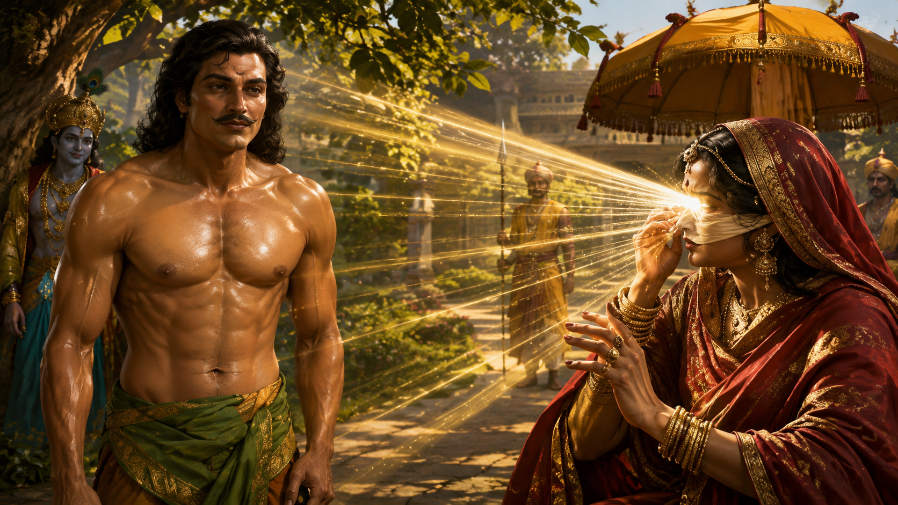
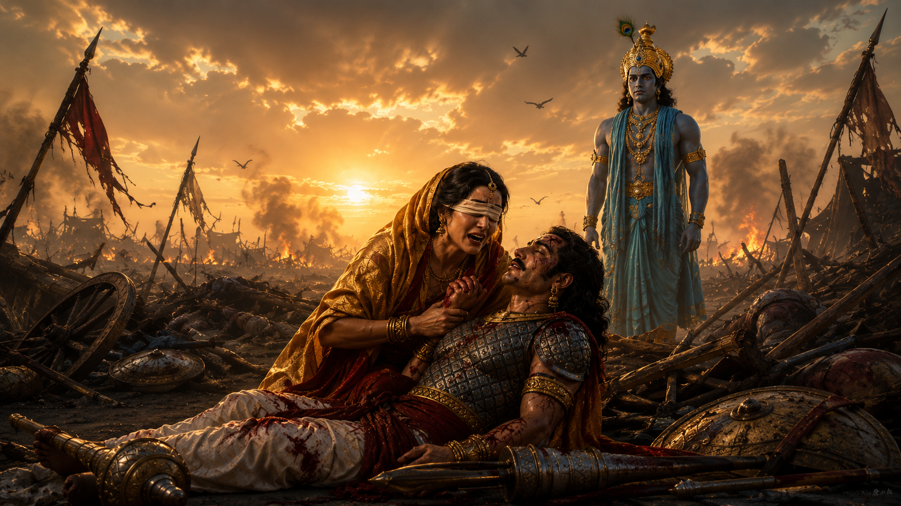

One of the most tragic, noble, and emotionally powerful lives described in the Mahabharata is that of Queen Gandhari.
She is often remembered simply as the mother of the Kauravas, yet her life was far more profound than that single identity suggests.
She was a woman who dedicated every major decision of her life to dharma, unwavering loyalty to her husband, and the honor of her family. Yet despite all her sacrifice, she ultimately witnessed the destruction of all one hundred of her sons.
Gandhari was born to King Subala, the ruler of the kingdom of Gandhara. Her brother was Shakuni, who would later become one of the central figures in the events leading to the Kurukshetra War.
From childhood, Gandhari was known for her wisdom, devotion, and ascetic nature. It is said that she performed severe penance in worship of Lord Shiva.
Pleased with her devotion, Lord Shiva granted her a remarkable boon:
"You shall become the mother of one hundred sons."

Around the same time, important events were unfolding in Hastinapura.
After the death of King Vichitravirya, the sage Vyasa fathered three sons through the ancient practice of niyoga—Dhritarashtra, Pandu, and Vidura.
Dhritarashtra, the eldest of the three, was born blind. Although he was the rightful heir by birth, the throne of Hastinapura was entrusted to his younger brother Pandu because of his blindness.
Some time later, Bhishma began searching for a suitable bride for Dhritarashtra.
When he learned of Princess Gandhari's virtues and of the extraordinary boon she had received from Lord Shiva, he decided that she would be the ideal queen for Hastinapura.
King Subala accepted the proposal.
When Gandhari learned that her future husband had been blind since birth, she made a decision that would make her one of the most remembered women in Indian history.
She voluntarily covered her own eyes with a cloth.
She declared that if her husband could never behold the world with his own eyes, then she too would choose to live in the same darkness, sharing equally in both his joys and his sorrows.
From that day onward, she never looked upon the world again.

Gandhari's sacrifice has remained one of the most remarkable examples of devotion in Indian tradition.
Although later scholars have interpreted her decision in different ways, the Mahabharata presents it primarily as an expression of her unwavering fidelity and extraordinary determination.
After her marriage, Gandhari became the Queen of Hastinapura.
In due course, she conceived a child.
However, unlike an ordinary pregnancy, her child remained in the womb for an unusually long time. Many months passed, yet no child was born.
During this period, news arrived that Kunti, who was then living in the forest, had given birth to her first son, Yudhishthira.
The news filled Gandhari with deep sorrow.
Despite having received the divine boon of one hundred sons, she had still not experienced the joy of motherhood, while Kunti's child had already been born.
Overwhelmed by grief and frustration, Gandhari struck her own womb.
Instead of a child, a single massive lump of flesh—hard as iron—emerged.
At that very moment, the sage Vyasa arrived.
He comforted Gandhari and instructed that the mysterious mass be divided into one hundred and one pieces.
Each piece was carefully placed inside a separate pot filled with clarified butter (ghee), making a total of one hundred and one vessels.
Vyasa declared that, in due course, children would emerge from each of them.

When the appointed time arrived, the first vessel produced a son who was named Duryodhana.
One by one, the remaining ninety-nine sons were born, followed finally by a daughter named Duhshala.
Thus, Lord Shiva's boon was completely fulfilled, and Gandhari became the mother of one hundred sons and one daughter.
Yet, at the very moment Duryodhana was born, terrifying omens appeared throughout the kingdom—signs that foretold the terrible destruction that would one day engulf the Kuru dynasty.
The moment Duryodhana was born, numerous dreadful omens appeared throughout Hastinapura.
The cries of jackals and donkeys echoed in every direction. Birds of ill omen circled strangely through the sky, and the learned scholars interpreted these signs as warnings of a great calamity yet to come.
The royal astrologers and Brahmanas addressed King Dhritarashtra:
"O King, this child may one day become the cause of the destruction of the entire Kuru dynasty. If you wish to protect the kingdom and your lineage, you must gather the courage to renounce him."
In the Mahabharata, the wise Vidura offered the same counsel. He explained that when the destruction of an entire family is threatened because of one individual, sacrificing that one person for the welfare of the whole becomes the path of wisdom.
Yet Dhritarashtra could not bring himself to make such a decision.
His love for his eldest son overwhelmed his judgment.
Gandhari, too, was a mother.
She had carried the child in her womb, and the thought of abandoning her newborn son was impossible for her to accept.
Thus, the opportunity that might have prevented the future catastrophe quietly passed away.

As the years passed, Duryodhana grew up alongside his ninety-nine brothers.
Meanwhile, after the death of King Pandu, Kunti returned to Hastinapura with her five sons—Yudhishthira, Bhima, Arjuna, Nakula, and Sahadeva.
The Kauravas and the Pandavas were now raised and educated together within the royal palace.
Gandhari cared deeply for all the children.
Although Duryodhana was her eldest son, she gradually realized that jealousy and pride were taking root within his heart.
Whenever he displayed hatred toward the Pandavas, Gandhari tried to guide him toward the path of righteousness.
Again and again, she urged him to choose dharma over resentment.
But Duryodhana was falling more and more under the influence of his maternal uncle, Shakuni.
Shakuni constantly nurtured feelings of envy and hostility toward the Pandavas within the young prince.
Dhritarashtra, despite recognizing many of his son's faults, repeatedly chose to overlook them.
Gandhari often warned her husband that excessive attachment to one's children could ultimately destroy both the kingdom and the family.
Yet her words were rarely heeded.
Time moved relentlessly forward.
One by one, the great tragedies unfolded—the conspiracy of the House of Lac, the infamous game of dice, the humiliation of Draupadi, and the exile of the Pandavas.

Throughout these events, Gandhari never openly supported adharma.
When Draupadi was humiliated in the royal assembly, Gandhari was among those who ultimately urged Dhritarashtra to intervene before the situation became even more disastrous.
Dhritarashtra then granted Draupadi the opportunity to ask for boons, through which the Pandavas were temporarily rescued from immediate danger.
By then, however, the damage had already been done.
The mistrust between the Pandavas and the Kauravas had grown so deep that war had become almost unavoidable.
Even before the great battle began, Gandhari pleaded with Duryodhana many times.
She told him,
"Where there is Dharma, there alone is victory. No lasting success can ever be achieved through the path of Adharma."
But Duryodhana refused to listen.
For him, the kingdom, his pride, and his desire for revenge had become the highest truths.
A mother's heart understood everything.
She loved her son deeply, yet she also feared the destiny toward which he was rushing.
By now, events had reached a point from which there was no return.
Soon, the Great War of Kurukshetra would begin—a war in which Gandhari would witness the fate of her one hundred sons, not with her eyes, but with her heart.
The great war of Kurukshetra had begun.
On one side stood the Pandavas, guided by Lord Krishna. On the other stood the Kauravas, whose army was successively commanded by Bhishma, Drona, Karna, and finally Shalya.
Gandhari remained in Hastinapura.
She never removed the blindfold from her eyes, yet every report from the battlefield reached her heart.
With each passing day, another great warrior fell in battle.
Bhishma lay upon his bed of arrows.
Drona was slain.
Karna fell in battle at the hands of Arjuna.
One after another, the mighty warriors of the Kaurava army disappeared from the battlefield.
Gandhari knew that the war was approaching its final and most tragic chapter.
Before the war had begun, however, an important event had taken place.
Duryodhana came to seek his mother's blessings.
It is traditionally believed that after spending many years with her eyes covered, the immense spiritual power accumulated through Gandhari's austerities had become concentrated in her gaze.
She told her son,
"After taking your bath, come before me without wearing any clothes. Today I shall remove my blindfold. The power of my austerities will make your entire body as strong and invulnerable as a thunderbolt."

As Duryodhana returned after bathing, he encountered Lord Krishna on the way.
Krishna smiled and asked,
"Duryodhana, are you truly going to stand before your mother in that condition? You are no longer a child. Such a thing is not appropriate."
Embarrassed by Krishna's words, Duryodhana covered his waist and thighs with large banana leaves before entering his mother's chamber.
For the first time in many years, Gandhari removed the cloth from her eyes.
The tremendous spiritual energy stored through decades of penance radiated from her gaze and spread across Duryodhana's body.
Yet the light could not reach the parts hidden beneath the banana leaves.
Gandhari immediately realized that her son had not followed her instructions completely.
With a deep sigh, she said,
"Your thighs are no longer protected."
Later, during the final mace duel, Bhima—following Krishna's signal—struck Duryodhana on his thighs, and that blow became the cause of his defeat.
The war finally came to an end.
All one hundred of Gandhari's sons, including Duryodhana, had been killed.
When the terrible news reached Hastinapura, Gandhari's heart was shattered.
In a single war, she had lost every one of her sons.

After the war, Lord Krishna, the Pandavas, and many sages came to offer their respects to Gandhari.
Yudhishthira bowed humbly before her.
The grief within Gandhari was so overwhelming that, for a brief moment, intense anger arose in her heart.
The Mahabharata relates that a small portion of the spiritual power contained in her gaze touched Yudhishthira's toenails, causing them to become dark.
Yet she immediately mastered her anger.
She knew that the Pandavas, too, had suffered immeasurable sorrow because of the war.
But when her thoughts turned toward Lord Krishna, a profound question arose within her.
She believed that if Krishna had truly wished, this terrible destruction could have been prevented.
From that moment began one of the most significant episodes in the Mahabharata—
the moment when Gandhari pronounced a curse upon Lord Krishna Himself, a curse that would eventually lead to the destruction of the mighty Yadava dynasty.
The great war of Kurukshetra had come to an end.
The battlefield was covered with nothing but destruction, grief, and death. The mighty royal house of Hastinapura had been nearly wiped out. The kings and warriors whose valor had once been celebrated throughout Aryavarta were now gone.
Gandhari was devastated by the loss of her one hundred sons.
She learned of the deaths of Duryodhana, Duhshasana, and all her remaining sons. For a mother, no sorrow could have been greater.
It was then that Lord Krishna came before her.
Gandhari knew that Krishna was no ordinary human being. She was fully aware of His divine nature and incomparable power. Because of this, one question continued to trouble her heart.
She said,
"O Madhava, if You had truly wished, this terrible war could have been prevented. Who possesses greater power than You? You made many efforts to establish peace between both sides, yet in the end You allowed this destruction to take place. Today all my sons are dead, and the Kuru dynasty has been destroyed."

Her voice carried far more sorrow than anger.
She continued,
"If there is any power in my fidelity to my husband, in my austerities, and in my life devoted to Dharma, then by that very power I curse You. Just as my family has perished today, so too shall the Yadava dynasty one day destroy itself through internal conflict."
She further declared,
"Thirty-six years from this day, Your own clan shall come to its end. Your relatives will slay one another, and just as the women of the Kuru dynasty mourn today, so too shall the women of the Yadavas weep for their loved ones."
The Mahabharata records that Lord Krishna did not oppose Gandhari's curse.
Instead, He answered with complete serenity.
"Mother, everything you have spoken shall indeed come to pass. In truth, no external enemy can destroy the Yadavas. If their end comes, it will arise from their own actions. When the appointed time arrives, your curse shall become one of the instruments through which the Divine Will unfolds."
Krishna showed no anger toward Gandhari.
He understood that the words spoken by a grieving mother were not born merely from wrath, but from unbearable sorrow.
Some time later, the sage Vyasa also came to console Gandhari.
He explained that the great war had not occurred solely because of human choices. The burden of adharma upon the Earth had to be removed, and the departure of many great warriors was also part of the divine plan.
Yet no philosophical explanation could truly heal a mother's broken heart.
Gandhari performed the final rites for her sons and mourned their passing.

The Mausala Parva of the Mahabharata later recounts that Gandhari's curse eventually came to pass.
Approximately thirty-six years later, a fierce quarrel arose among the Yadavas at Prabhasa. The conflict soon turned into a devastating battle, and they destroyed one another.
Not long afterward, Lord Krishna also concluded His earthly pastimes.
Thus, Gandhari's curse was far more than the outcry of a grieving mother. It became one of the pivotal events that shaped the final chapters of the Mahabharata and marked the close of an entire age.
After the great war of the Mahabharata, Yudhishthira was crowned King of Hastinapura.
Although the Pandavas had emerged victorious, they found no joy in their victory. The memory of having lost their own relatives, teachers, and loved ones continued to weigh heavily upon their hearts.
Yudhishthira treated Dhritarashtra and Gandhari with the same reverence he would have shown his own parents. He ensured that they were cared for with the greatest respect.
Bhima, however, still carried deep resentment toward Duryodhana and Duhshasana. At times, he spoke proudly of his victories over them, unintentionally reopening the wounds in the hearts of Dhritarashtra and Gandhari.
Even so, Gandhari never allowed hatred toward the Pandavas to take root within her heart.
For nearly fifteen years, Dhritarashtra, Gandhari, and Kunti continued to live in Hastinapura.
In time, Dhritarashtra developed a deep sense of detachment from worldly life.
One day, he resolved to spend the remainder of his life in the forest, devoted to austerity and spiritual practice.
Without hesitation, Gandhari supported her husband's decision.
She willingly renounced the comforts of the royal palace and accompanied him into the forest to embrace the life of Vanaprastha.
Kunti also chose to leave the palace and join them.
When the Pandavas learned of their decision, they were deeply saddened and tried to persuade them to remain in Hastinapura.
Yet all three remained firm in their resolve.

They settled near the hermitages of great sages and adopted a life of simplicity.
Wearing humble garments, living on modest food, and dedicating themselves to meditation, prayer, and austerity, they spent their remaining years seeking inner peace.
Some time later, Yudhishthira and his brothers journeyed into the forest to visit them.
The sage Vyasa also arrived.
The Ashramavasika Parva of the Mahabharata describes that, seeing the profound grief still carried by the surviving members of the Kuru family, Vyasa performed an extraordinary act through his yogic power.
From the sacred waters of the Ganga, he manifested the great heroes who had fallen in the Kurukshetra War—Bhishma, Drona, Karna, Duryodhana, Duhshasana, Abhimanyu, Ghatotkacha, and countless others—in their radiant celestial forms.
For one final night, parents, children, brothers, and loved ones were reunited.
When the divine reunion came to an end, the warriors peacefully returned to their respective celestial realms.

Some time afterward, Dhritarashtra, Gandhari, and Kunti continued their life of meditation deep within the forest.
One day, a great forest fire suddenly swept through the wilderness.
According to the Mahabharata, Dhritarashtra realized that the time had come for their earthly lives to end.
He instructed Sanjaya to leave immediately and save himself.
Obeying his master's command, Sanjaya departed.
Dhritarashtra, Gandhari, and Kunti remained seated in deep meditation.
Without fear or resistance, they peacefully surrendered their mortal bodies within the sacred flames.
Thus ended a life that, from beginning to end, had been marked by duty, sacrifice, sorrow, patience, and unwavering resolve.
Gandhari's place in the Mahabharata extends far beyond being remembered simply as the mother of the Kauravas.
She was a devoted wife who willingly shared her husband's blindness.
She was a mother who loved her sons deeply, yet repeatedly urged them to walk the path of Dharma.
She was a queen whose wisdom and foresight were too often ignored.
And she was an ascetic whose curse ultimately shaped the destiny of the mighty Yadava dynasty.
Gandhari's life reminds us that a mother's love knows no limits, but when her children choose the path of Adharma, her suffering becomes equally boundless.
Her story remains one of the most moving and thought-provoking narratives of the Mahabharata—a timeless tale of sacrifice, righteousness, motherhood, compassion, and the inexorable justice of time.
Primary Sources: Mahabharata — Adi Parva, Udyoga Parva, Stri Parva, Ashramavasika Parva, and Mausala Parva.
This retelling is based primarily on the Mahabharata, with certain traditional narratives included where they have long formed part of the broader Indian storytelling tradition.
Note: Certain episodes in this retelling—such as Gandhari's boon from Lord Shiva and the account of her divine gaze strengthening Duryodhana's body—belong to long-standing traditional narrations preserved in later retellings and Puranic literature. These episodes are widely known in the Indian tradition, though they are not presented in the same form across all recensions of the Mahabharata.